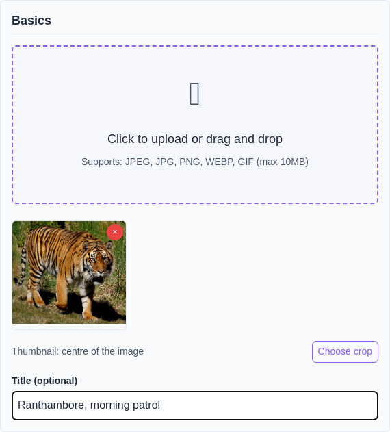
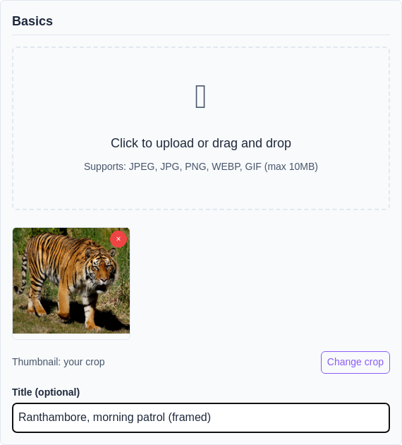
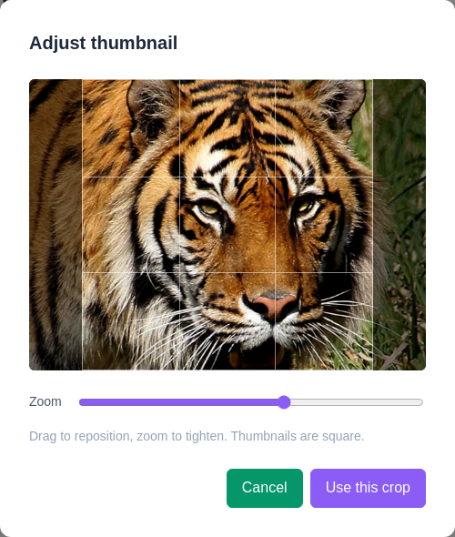
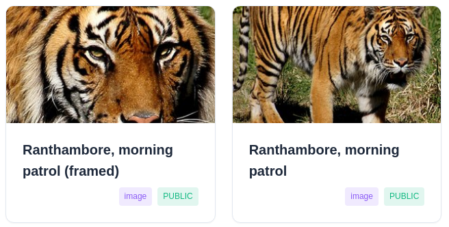
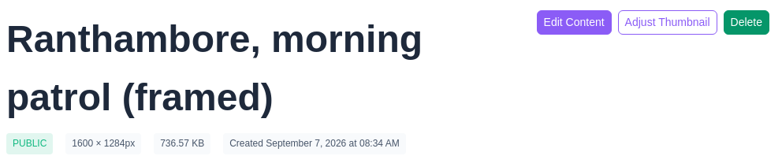
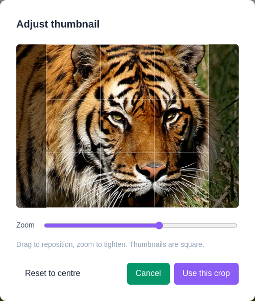

Choose which part of a picture becomes its thumbnail
Wherever pictures are listed rather than displayed — a character's media tab, your own media, a gallery grid — what you see is a square thumbnail, not the whole image.
That thumbnail used to be cut from the middle of the picture, every time, with no way to change it. Wherever the interesting part is not dead centre the middle is the wrong choice: a full-body drawing thumbnails to a torso, and a wide scene thumbnails to whatever happens to be halfway across.
You can now say which square to use. Doing nothing still gives you the middle, so nothing you have already uploaded has changed.
Frame it before the picture is even sent
Change your mind from the image's own page
Your original picture is never altered or re-saved
Put it back to the automatic crop whenever you like
Pick a file on the upload page and a line appears beneath the preview saying what the thumbnail will be. Before you touch anything it reads “Thumbnail: centre of the image”, which is the automatic behaviour spelled out rather than left for you to discover afterwards.
Choose crop opens the cropper. Once you have picked a square the line changes to “Thumbnail: your crop” and the button becomes Change crop, so you can tell at a glance whether the choice registered.


Drag the picture to move it under the frame, and use the Zoom slider to tighten in. The bright square is what the thumbnail will show; everything dimmed around it is what gets left out.
The frame is always square, and its shape is not adjustable. Thumbnails are square everywhere they appear, so a rectangle would only be squashed back into one.
Use this crop keeps the framing; Cancel closes without changing anything.

Below is one photograph uploaded twice. On the left the thumbnail was framed on the animal's head; on the right it was left to the automatic crop, which took the middle of the picture and reduced the subject to something you have to squint at.
The difference only ever shows in listings. Opening either one shows the same full picture — framing changes the thumbnail and nothing else.

Open one of your images and there is an Adjust Thumbnail button beside Edit Content and Delete. It opens the same cropper, already showing the framing currently in use, so you are adjusting what you chose last time rather than starting over.
Saving re-makes the thumbnail from your original picture every time, never from the last thumbnail. Re-framing the same image ten times costs it no quality, because a previous crop is never the starting point.

An image with a framing of its own gets a Reset to centre option in the cropper. It throws your choice away and returns the image to the automatic crop — the same thumbnail it would have had if you had never framed it.
The option is only there when there is something to undo. An image still on the automatic crop does not show it.
